The Before and the After
Rasoi Steel Works has hired you. Today you meet its 1998 ERP, do a morning’s purchasing on it, write down what you would build, and then see the After.
Rasoi needs you
Open the link on your phone or laptop. Type your name. The story that follows is addressed to you.
Everyone, open the Experience
One web app for the whole course. Each of you gets your own Rasoi: your own copy of the company’s ERP, with its own stock and its own documents.
- 1Open the link and type your name.
- 2Read the letter addressed to you.
- 3Stop at the brief. Do not skip ahead to the After: you will write your wishlist first.
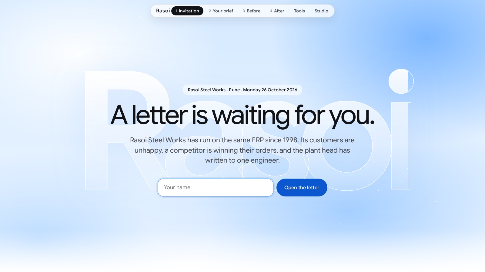
| / | the invitation and your letter | now |
| /brief | your wishlist and the class wall | Part 4 |
| /before | Bahi ERP 7.2 and five missions | Part 3 |
| /after | Rasoi’s new home page | Part 5 |
| /tools · /studio | what is inside; workflows | Part 6; L6 |
A letter from Pune
Rasoi Steel Works makes pressure cookers in Pune: 1,80,000 a month. Every cooker needs one silicone gasket.
It has run on Bahi ERP 7.2 since 1998. Every order goes through its screens.
The plant head, Anand Patil, has written to you.
Everything here is fictional: the company, the ERP, the people, the suppliers and the numbers.
I am Anand Patil. I run the Rasoi Steel Works plant in Pune. We make pressure cookers, 1,80,000 of them every month, and we sell them through dealers across India.
Our cookers are good. Our ordering is not. Every purchase, every approval and every delivery at Rasoi still goes through Bahi ERP 7.2, a system we bought in 1998. It works the way a 1998 system works: codes, screens, and messages nobody can read.
Our dealers have noticed. So has our competition.
I am writing to you because we need an engineer we can trust. Please read what is happening here. Then tell me what you would do.
Anand Patil, Plant Head · the letter as the Experience shows it at /
What the dealers say
Rasoi sells through dealers across India. Two of them, in their own words, as your brief in the Experience tells it.
Neither is complaining about the cookers. Both are complaining about the paperwork around them.
Keep their words in mind. In Part 4 you will write what you would build for them.
What is an ERP, why does working in one hurt, and what would it look like if Kavita could just ask?
What an ERP is, from first principles
The Before: you do the missions by hand
Your wishlist, before you see anything
The After, how it works, and what it is
What an ERP is
From first principles, on Rasoi’s own records. No tools, no models: just what a company writes down and why.
One shared record
Purchasing, stores, finance, production, sales and HR all read and write the same record.
Each group of screens for one department is a module.

Why one record matters
Take PO/2026/01182, Kavita’s gasket order. Before an ERP, every desk kept its own book.
With one record, purchasing releases the order and stores and finance see it at once. Nobody re-types it.
Press the two buttons. This is the whole reason companies bought ERPs in the 1990s.
Master data
The gasket is GSK-SIL-05L. Deccan Polymers is DP-RJK-0042.
A cost centre is the budget an order is charged to. PRD-07 is the Diwali run.
People are master data too: Kavita may approve up to ₹2,50,000, including GST.
bahi/erp/seed.py), as Bahi’s lookups returned them.Transactions
The order does not copy Deccan’s name or address. It stores DP-RJK-0042.
It can point at another document too: this order came from request PR/2026/04417.
experiments/logs/before_measure.json).Every document has a status
An order is a Draft until it is submitted.
It waits for approval if it is above the buyer’s limit, then is Approved.
Only Released means the supplier has it. Approved is not enough.
When every gasket has arrived, it is Closed.
Procure-to-pay
Stock is running low.
Kavita raises a request.
Rohit approves it.
Kavita makes the order, then releases it.
Neha counts the goods in.
The numbers on this order
54,000 gaskets on hand in Pune, 6,000 used a day: 9 days of cover before Diwali production.
The request is estimated at the last price, ₹11.40, plus Bahi’s 18%: ₹2,69,040. Kavita’s limit is ₹2,50,000, so it goes to Rohit.
The order uses the contract rate since 1 October, ₹11.90: ₹2,38,000 + 18% = ₹2,80,840.
Slide the quantity and watch who has to sign.
Why ERPs are screens
In 1998, the way to let a person change a shared record was a form: fields to fill, and buttons.
One screen per kind of work. Bahi has 412 of them. This one is order entry, PUR-PO-01.
Codes in bold boxes, with F2 to look them up. Red stars are required.
Each button sends some fields to the ERP and fills others back in. The grey bar at the bottom is the only place Bahi talks back.
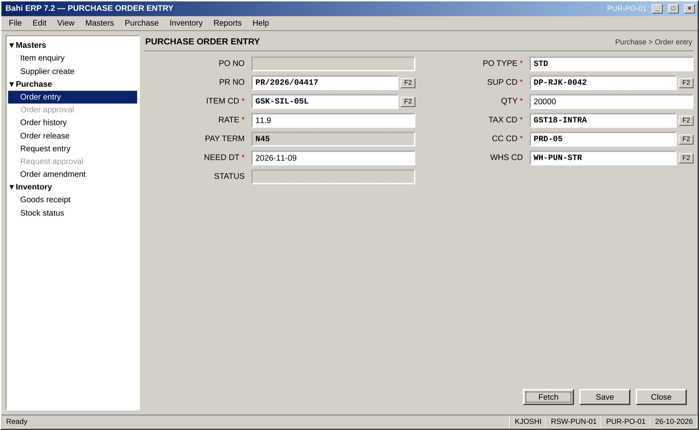
experiments/legacy_shots.py).A button calls a service
The output is always the same envelope: rc (S or E), an error code, a message, and data.
A refused save says ERR-PO-0412. A save that “worked” can still come back as a Draft.
Bahi has 38 services, plus 3 for goods receipt. Lecture 1 treats every one as a black box.
experiments/logs/services_blackbox.json).Bahi ERP 7.2, since 1998
Bahi Systems has sold Bahi to Indian manufacturers since 1998: about 1,200 plants run it.
412 screens and about 3,100 stored procedures. It works. It holds every rule Rasoi has written down.
Its customers now ask for AI, and newer products are winning deals.
Rasoi will not replace Bahi. Nobody replaces a 25-year-old ERP in a quarter. The After has to sit on top of it.
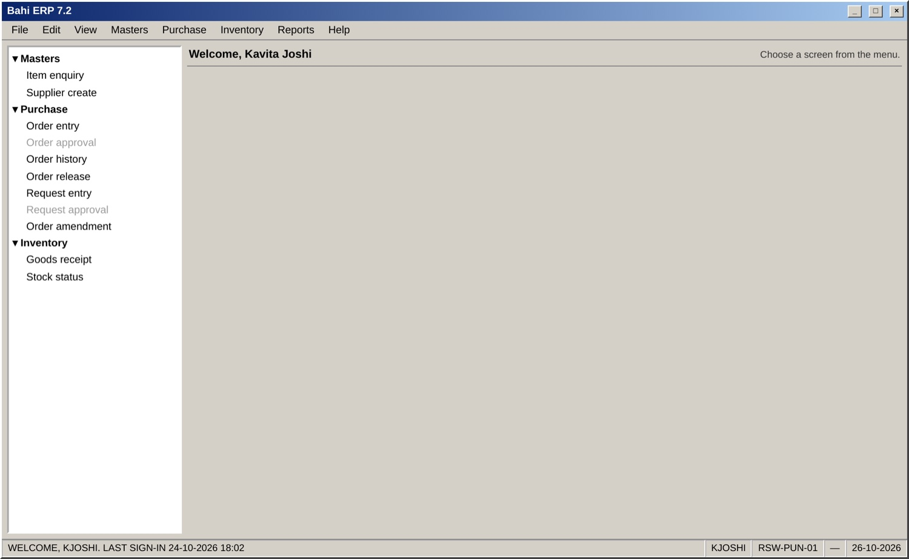
Check yourself
Answer out loud before you open each one.
Answer
Deccan is master data (a supplier, code DP-RJK-0042). The order is a transaction: a document that points at Deccan by code.Answer
RL, released. AP (approved) is still inside Rasoi.Answer
Above Kavita’s ₹2,50,000 limit, so her manager Rohit (limit ₹10,00,000). The limit counts GST.Answer
So nobody re-types the order and every desk sees the same status at once.The Before
You are Kavita, then Rohit, then Neha. Five missions on Bahi’s legacy screens, against a timer that counts your clicks, keys and errors.
Your turn, 15 minutes
Open /before. It is Monday 26 October 2026, 9:40 AM. The Experience has a five-minute guide to the screens; then the timer starts.
- 1As Kavita: how many 5-litre gaskets do we have, and for how many days?
- 2Raise a purchase request for 20,000, needed by 9 November.
- 3Sign in as Rohit and approve it.
- 4As Kavita, order from Deccan Polymers and release the order.
- 5As Neha, receive 12,000, then the other 8,000.
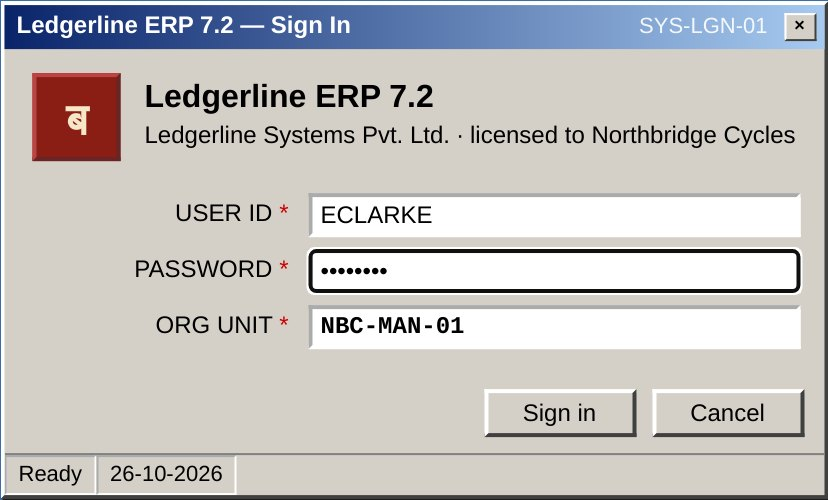
Mission 1: check the stock
Kavita does not know the gasket’s code. She searches “gasket 5”.
Four gaskets look alike. -R is rework stock, never ordered. The rubber one is inactive.
She opens a second screen and types the code again: 54,000 on hand, 9 days of cover, in one warehouse.
Mission 2: the request
Request entry. She types the code and presses Fetch. Bahi fills in her default cost centre: PRD-05.
Save, then Submit. Bahi estimates ₹2,69,040 and sends it to Rohit.
Nothing warns her that PRD-05 closed on 15 October. Saving a request does not check.
Mission 3: Rohit approves
Rohit signs in at his own PC. Kavita phones him to say there is something in his inbox.
He picks the row, presses Fetch, types A for approve, and Confirm.
The approval screen is greyed out in Kavita’s menu. In Bahi, a role is a list of screens.
Mission 4: which Deccan?
Order entry needs the supplier’s code. She opens order history to copy it from the last order.
Or she presses F2 on the supplier field and searches “Deccan”: three rows.
DP-RJK-0009 is a blocked duplicate of the same company. Deccan Paints & Inks is a different company with a similar name.
An error code
She presses Fetch. Bahi fills in the contract rate, ₹11.90, and a tax code: GST18-INTRA.
Save. The status bar turns red: ERR-PO-0412 TAX REGION DOES NOT MATCH SUPPLIER STATE (GJ).
INTRA is for a supplier in Maharashtra. Deccan is in Gujarat and needs GST18-INTER. Kavita phones IT to find that out.
Saved is not done
She types GST18-INTER and saves again. The status bar says PO/2026/01182 SAVED.
The status field says DR, small and grey: a Draft. The order took PRD-05 from the request, and PRD-05 is closed.
No error, no e-mail. On Friday stores asks where the gaskets are. Release says ERR-PO-0715.
Fixing it, then Neha
Order amendment: change the cost centre to PRD-07. Rohit’s approval of the request still covers it, so it becomes Approved.
Release, again. Now RELEASED: Deccan has it.
Mission 5: Neha counts the truck in on the goods-receipt screen. 12,000 now, 8,000 later. Each delivery is its own receipt.
The traps
Six things in this sandbox that catch people. Each one is really in Bahi, with the exact words it shows.
Three are error codes that do not say what to do.
Two are silent: a Draft that looks saved, and a duplicate supplier that looks right.
One is not in Bahi at all: Shakti Seals, who quote ₹10.40, are not in the supplier list and hold no food-grade certificate.
The Before, measured
We played all five missions through Bahi’s own screens with a script, and counted every screen, field, code and button.
The careful run knows every trap and still opens 12 screens and types 12 codes.
experiments/logs/before_measure.json (the legacy driver, two fresh Rasois on Modal).The ERP holds the rules.
People hold the route.
GSK-SIL-05L is the gasket, and -R is rework.DR means nothing was sent.The pain points
Six kinds of pain, each with what happened in our run.
1 · You must know codes
12 codes typed on the careful path, 14 the first time.GSK-SIL-05L · DP-RJK-0042 · PRD-07 · GST18-INTER2 · You must know the route
9 different screens, in an order nobody wrote down.history → entry → Fetch → Save → release3 · Silent outcomes
“SAVED” on an order that never left Rasoi. Found days later.PO/2026/01182 · DR · W-CC-1144 · Errors that do not help
A code and a shout, with no next step.ERR-PO-0412 · ERR-PO-0715 · ERR-PO-06105 · Hand-offs between desks
Three people, three sign-ins, and a phone call to say “check your inbox”.KJOSHI → RMEHTA → NDESAI6 · Rules that live in heads
Bahi does not enforce the food-grade rule. Suresh does.Purchase Policy §6.2 · Shakti SealsCheck yourself
From your own run in /before.
Answer
You don’t, from the bar. Read the status field (DR, AP, RL) or try Release: only RL means sent.Answer
Compare your timer in the Experience with the class. Most people lose it on codes and on the Draft.Answer
Because the work is split by screen, not by job. Knowing the traps removes errors, not steps.Answer
That PRD-05 was closed. Bahi knew; it said so only by saving a Draft.Your wishlist
Before you see anything new: what would you build for Rasoi? Write it down. You will check the After against it.
Write it before you see it
Open /brief. Five minutes. Four questions, in plain words, the way Kavita would ask:
- 1What should Kavita be able to do in one sentence?
- 2What must never happen?
- 3Who should approve what?
- 4What would you show the dealers?
Then pick, from twelve, what the new system must do.
No wrong answers. The After is checked against your list, not ours.
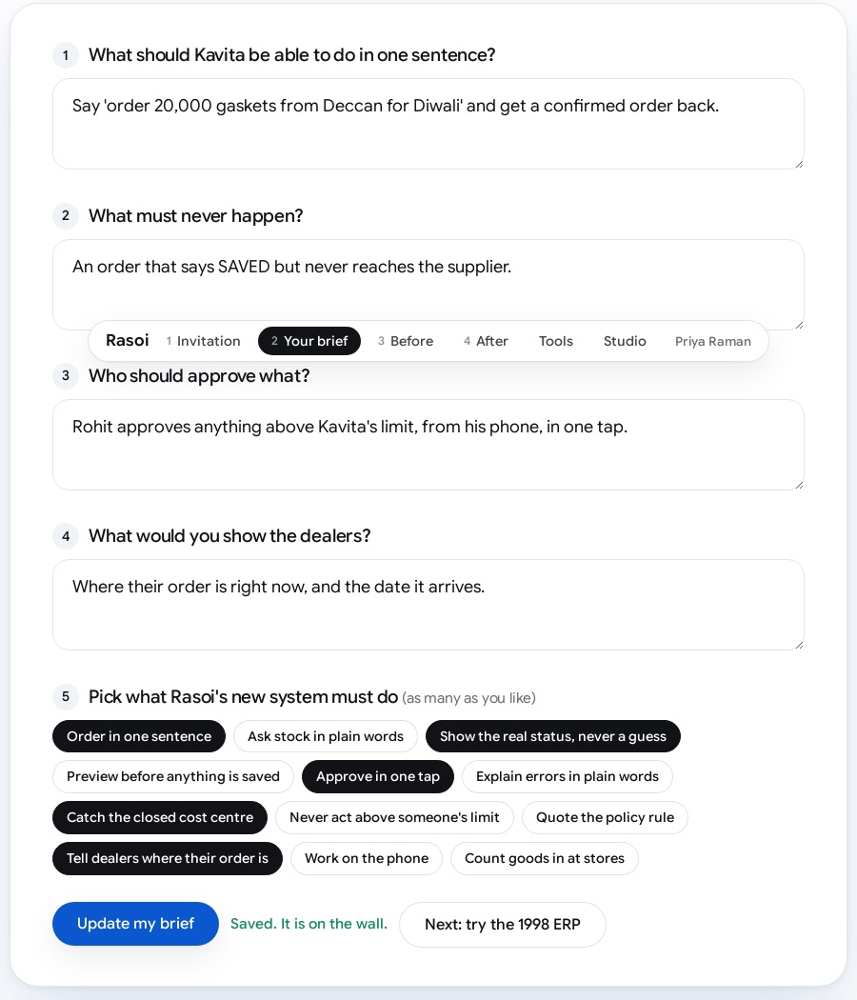
The class wall
Every wishlist goes up on one shared wall, as you submit it.
We read a few out. Look for what most of you asked for, and for the things only one person thought of.
Keep your tab open. In Part 5, tick off what the After does and circle what it does not.
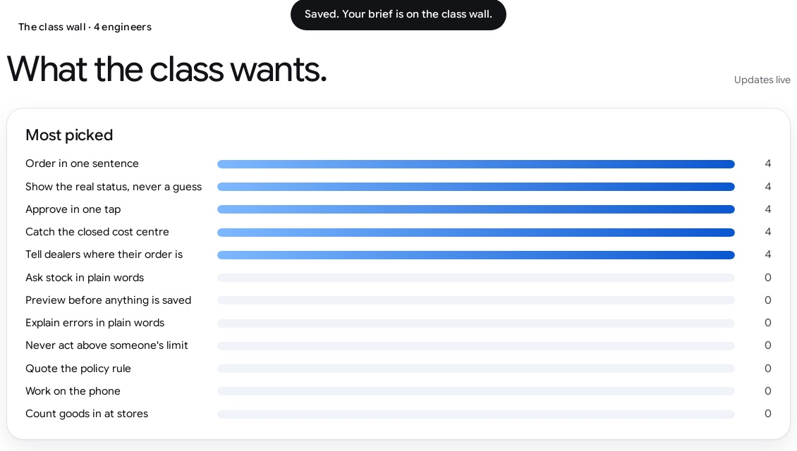
/brief, filled by the Experience’s test players. Listen for the six pains: codes, the route, silent outcomes, unhelpful errors, hand-offs, rules in heads.The After
Rasoi’s new home page. The same Bahi underneath. The same five missions, one sentence each.
Ask Rasoi
Open /after. Sign in as Kavita. The home page has one box: Ask Rasoi.
Bahi ERP 7.2 has not changed. Same stock, same suppliers, same rules, same document numbers.
What changed is how people reach it: in their own words.
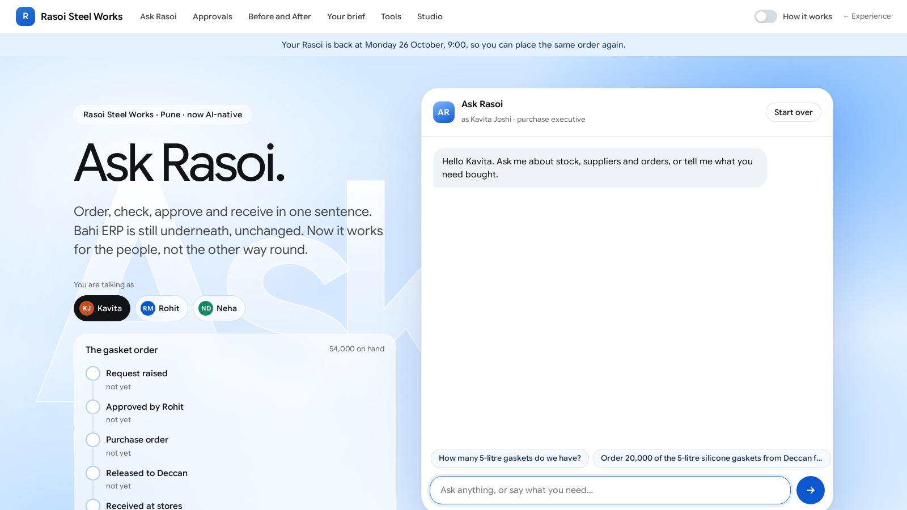
/after: Ask Rasoi, who you are talking as, and the gasket order’s progress. Same Bahi underneath.Mission 1, in one sentence
Kavita asks the way she would ask Suresh.
No item code, no warehouse code. The answer adds both warehouses: 54,000 in Pune and 12,000 in Chakan, so 11 days, not 9.
The legacy screen shows one warehouse at a time. This is a real reply, recorded in our run.
experiments/logs/after_run.json).Mission 2: it asks first
She did not give a cost centre. Ask Rasoi found the open one for the Diwali run, PRD-07, by itself.
It shows a preview and asks for a yes. ₹2,69,040 is above her limit, and it says so.
“Yes, go ahead.” PR/2026/04417, waiting for Rohit.
Mission 3: Rohit’s yes
Rohit opens the same page, signed in as himself. One sentence.
It finds the request in his own inbox and shows what he is signing.
He says yes. It is approved by RMEHTA, with Rohit’s limit, not Kavita’s.
Mission 4: no ERR-PO-0412
“Order the gaskets from Deccan Polymers and send the order to them.”
The preview has the right tax (18% IGST, Gujarat) and the open cost centre. ₹2,80,840. No error code, no Draft.
After saving it says plainly: approved, not yet released, and asks before sending.
Then: released to Deccan. PO/2026/01182.
Mission 5: Neha’s receipt
Neha types what the truck brought and the number on the challan.
A preview: 12,000 now, 8,000 still to come. Yes: GRN/2026/30001.
The second delivery, 8,000, gives GRN/2026/30002 and closes the order. Stock in Pune: 74,000.
A question, not a form
Shakti Seals quote ₹10.40, cheaper than Deccan. Can Kavita switch?
Bahi has no screen for this question. The answer was in Suresh’s head and in Purchase Policy §6.2.
Ask Rasoi says no, cites the clause, and explains what Shakti would need first. It registers nobody and orders nothing.
Before and After
Same missions, same Rasoi, same document numbers at the end.
Kavita, Rohit and Neha typed sentences instead of codes, and hit no errors.
Not fewer keystrokes: more characters, but words people already know, and no route to remember.
before_measure.json; After from after_run.json, the missions without the Shakti question.Your scorecard
The Experience keeps your own runs: your time in /before, your time in /after, your errors, side by side.
Look back at your wishlist: /after shows it next to what was built. Tick what the After does, circle what it does not yet.
One more page: the Studio. There you join steps into a workflow, request → order → receipt, without anyone typing. That is Lecture 6.
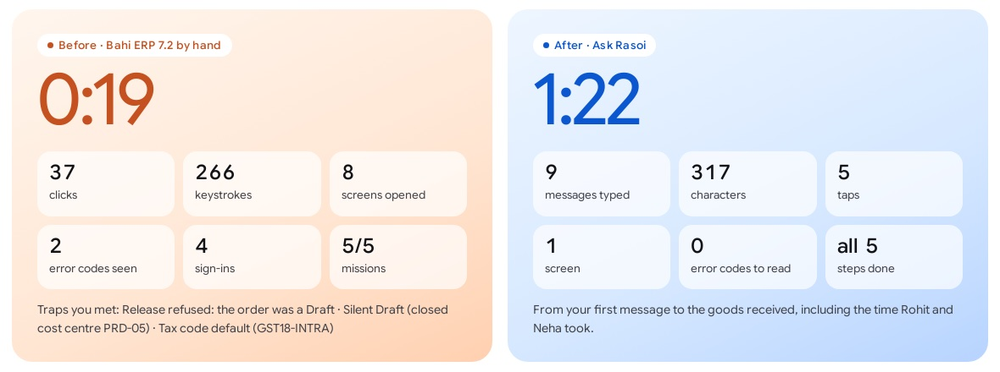
/after, here for the Experience’s scripted test player (a robot, hence 0:19).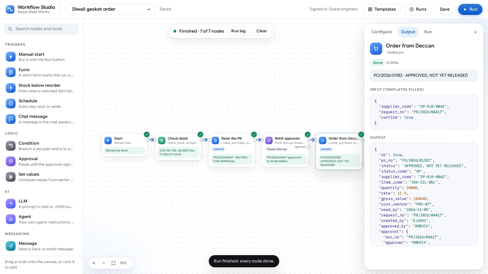
How it works
Only now: what is behind the box. One tool per activity, a description in JSON, a Python file, a plug called MCP, and an LLM that chooses.
From one sentence to a receipt
Five parts. Bahi is the same black box it was in Part 2.
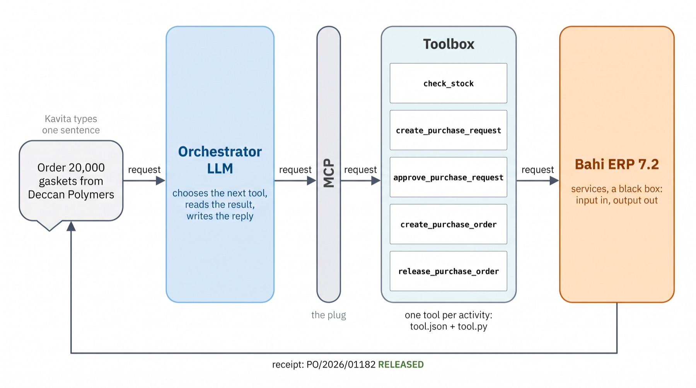
One tool per activity
15 tools, grouped the way Rasoi works. Each one is a job, not a screen.
The ember edge marks tools that save something. Those preview first and ask for a yes.
Click any tool. All of them /tools
A folder, two files
Every tool is a folder. create_purchase_order/ holds two files.
tool.json is what the LLM reads: the name, a description, and the shape of the input and output.
tool.py is what runs: Python that calls Bahi’s services and returns a receipt.
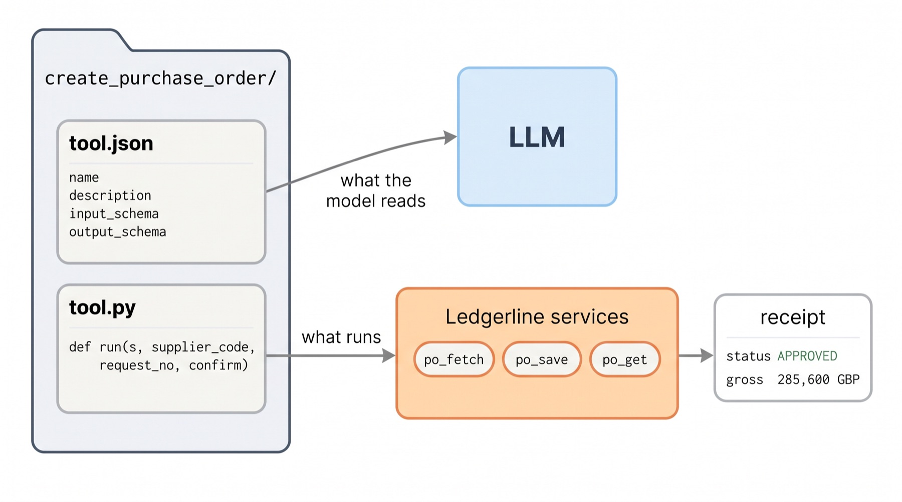
tool.json
The name and description: when to use this tool.
The input schema: supplier_code is required; confirm is false (preview) or true (save).
The output schema: the receipt, with the order’s real status.
tool.py
Ordinary Python. Each trap you hit by hand is handled here once.
It takes the item, quantity and cost centre from the approved request.
The tax code comes from the supplier’s state: no ERR-PO-0412.
A closed cost centre is a warning before saving: no silent Draft.
Without confirm it only previews.
It reads the order back from Bahi and says what to do next.
JSON in, JSON out
This is the order mission as it really happened: the arguments the LLM chose, and what the tool returned.
The same thing as a Bahi service, one level up: an input, an output, nothing hidden.
Drag through all of Ask Rasoi’s tool calls from the five missions.
The LLM chooses
Nobody wrote “check the budget first” for the request. It did that to find an open cost centre.
For the Shakti question it chose to read policy, and wrote nothing.
MCP, the plug
Ask Rasoi does not have the tools written into it. It asks the toolbox server what it has.
The same server plugs into any MCP host. Lecture 4 builds it from scratch.
Check yourself
On /after, switch on “How it works” and watch the cards while you answer.
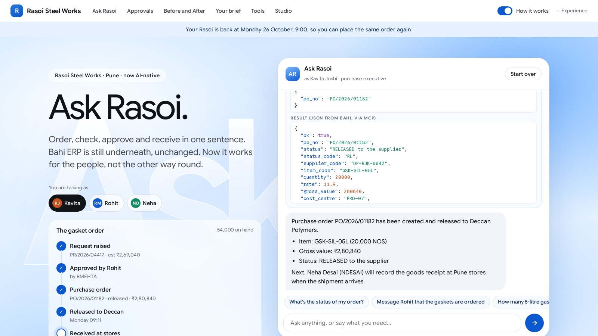
Answer
It reads tool.json (name, description, schemas). Our code runs tool.py. The model never runs anything itself.confirm?Answer
So every write is previewed first and only saved after the person says yes.Answer
Into tool.py: the tax code is worked out from the supplier’s state, once, in code.Answer
A standard way to list and call them, so any host (Ask Rasoi, the Studio, a desktop app) can use the same toolbox.So this is an AI agent
Go back over what you saw and name it. Then the tools companies use for each piece, and the map of the next eleven lectures.
What you just watched
Four pieces, each one you saw on a plate today.
What makes it enterprise
A chatbot that can call tools is not enough inside a company. Four things, each from our run.
Permissions
Each person gets their own Ask Rasoi, bound to their own Bahi session. Rohit’s approved as Rohit; Kavita’s acted as Kavita.PR/2026/04417 · approved_by = RMEHTAApprovals
Above ₹2,50,000 the request waited for Rohit. The assistant asked before every save.6 of the 12 messages were “Yes, go ahead.”Proof
Every save came back with a receipt read from Bahi, not a guess.PO/2026/01182 · RELEASED · ₹2,80,840Legacy systems
Bahi did not change. Its 38 services stayed black boxes; the tools sit on top.po_fetch · po_save · po_get · po_releaseThe 2026 agent stack
An agent stack is the set of tools a company runs for each piece of an agent. Click a piece of Ask Rasoi.
What companies use
October 2026. Other people’s numbers, not our measurements: read them as direction, not fact.
Twelve lectures, six weekends
Today you saw Ask Rasoi from the outside. In Lectures 2–7 you build every piece yourself, by hand.
In Lectures 8–11 you put each piece on the tools companies use, and measure it on the same tasks.
Lecture 12, Sun 6 Dec, is demo day: you take it to a module of your own.
Click any lecture to light its piece.
NB1: meet Bahi from Python
Runs in Colab with no API key: the model replies are replayed from our run.
- 1Call Bahi’s services as black boxes and read the envelope.
- 2Do the gasket order the legacy way, screen by screen, in code, and count the steps.
- 3Let Ask Rasoi do the same missions through the toolbox, over MCP.
- 4Open a tool’s JSON and Python, and list the tools over MCP.
NB1_before_and_after.ipynb
A1: your Before, your After
- 1Play the Before and the After in the Experience. Submit your wishlist and a screenshot of your scorecard.
- 2Pick your capstone module kit from
modules/: leave, payables, sales orders, transfers and four more. - 3Map its Before: the screens, the traps, the pain points, with the six-kind taxonomy.
- 4Write its After: the sentences people would say, and what must never happen.
Due before Lecture 3 (Sat 7 Nov). Guided track: a filled template. Builder track: also count the Before in code.
| Purchasing · amend PO | Kavita |
| Finance · payables | Kavita, Priya |
| HR · leave | Kavita |
| Sales · orders | Arjun |
| Service · warranty | Farhan |
| Inventory · transfers | Neha |
| Travel · claims | Kavita |
| Legal · contracts | Kavita |
The Brain: how an LLM works
We take the tools away and ask Ask Rasoi about the gaskets. With no tools, it makes up Rasoi’s stock figure. To see why, we open the model: tokens, embeddings, attention, the transformer, training, and sampling.